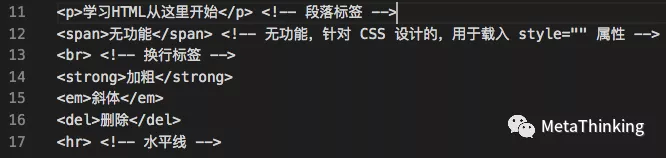

前端简单说就是我们能够看到的东西，比如页面内容，颜色，图片等，后端主要负责的是后台数据的传输等。前端页面主要分为三层：结构层（Html）、表示层（CSS）、应用层（JavaScript）。
HTML（结构层），用 HTML 实现页面结构
HTML（Hyper Text Markup Language，超文本标记语言），用来描述网页的一种语言，它不是一种编程语言，而是一种标记语言（标记标签），总的来说，HTML 使用标记标签来描述网页，而我们上网所看到网页，多数都是由 HTML 写成的。
“超文本”是指页面内可以包含图片、链接甚至音视频、程序等非文字元素。
“标记”指的是这些超文本必须由包含属性的开头与结尾标志来标记。
浏览器通过解码 HTML，就可以把网页内容显示出来，它也构成了互联网兴起的基础。
HTML 的基本结构
{kind=link}
标签的三大分类
- 块级元素
div，默认占整行，宽高可设，但设完后，还是占整行 - 行内块元素
img，不默认占整行，宽和高由自身内容决定，宽高可设 - 行内元素
b、span，不默认占整行，宽和高由自身内容决定，宽高不可设
HTML 页面包含内容
- 文本
 - 超文本
“超文本”是指页面内可以包含图片、链接，甚至音乐、程序等非文字元素
{kind=link}
HTML 常用标签
<!DOCTYPE html>
doc（document 文档），type（类型）声明文档类型，在浏览器打开的时候，告诉浏览器这是一个什么文件。<html> </html>根标签，双标签<html>是开始标签，</html>是结束标签 / 闭合标签<head> </head>头部标签<body> </body>身体标签<title> </title>标题标签<meta>设置标签<meta charset="utf-8">charset 用来设置编码格式，utf-8 汉字<img src="img/....jpg"/>
img 图像标签，用来引入图片，路径由 src 来引入。<link>外部引入<b> </b>加粗文字<button> </button>按钮标签<br />br 换行
CSS（表示层），用 CSS 完成页面的表现与风格
CSS（Cascading Style Sheets，层叠样式表）是一种用来表现 HTML（标准通用标记语言的一个应用）或 XML（标准通用标记语言的一个子集）等文件样式的计算机语言。
CSS 主要负责页面中各个部分的样式，如：字体大小、颜色，布局等。CSS 样式可以放到 HTML 页面中，也可以单独的放到 CSS 文件中。
CSS 不仅可以静态地修饰网页，还可以配合各种脚本语言动态地对网页各元素进行格式化。
样式引入的方式
- 行内样式：就是把样式属性写到标签里
style="" - 内部样式：head 标签里引入 style 标签
- 外部样式：link 元素
筛选器
- class（命名）：类，不具有唯一性，
.代表class - id：特指、具体，具有唯一性，
#代表id
属性（直接属性、间接属性）
- 宽度：
width - 高度：
height，单位是 px，像素 - 背景颜色：
background-color - 背景图片：
background-image，用url引入路径 - 背景大小：
background-size - 字体颜色：
color - 转换元素：
display
转换元素
display:block块级元素display:inline-block行内块元素display:inline行内元素
{kind=link}
快捷键
- 新建：
Ctrl+N - 隐藏辅助线：
Ctrl+H - 注释：
Ctrl+？ - 空格：
Tab
图片格式
- 有背景图案存成 jpg 格式
- 没有背景图案存成 png 格式
JavaScript（行为层），用 js 脚本语言，实现一些客户端的功能与业务
JavaScript是一种直译式脚本语言，是一种动态类型、弱类型、基于原型的语言，内置支持类型，包含类似 java 的语法（数据类型，数组，条件分支，循环，对象…），它的解释器被称为 JavaScript 引擎，为浏览器的一部分，广泛用于客户端的脚本语言，是连接前台和后台服务器的桥梁，它是操纵 HTML 的能手，为页面添加各种操作，使页面具有动态功能。如我们在页面上看到的按钮单击后的页面跳转或者弹不出的对话框、警告框等，都是通过 JavaScript（下面简称 “JS”）实现的。
JS的组成
- ECMAScript（核心），JavaScript 语言基础
- DOM（文档对象模型），规定了访问 HTML 和 XML 的接口
- BOM（浏览器对象模型），提供了浏览器窗口之间进行交互的对象和方法
JS的基本数据类型和引用数据类型
- 基本数据类型：
undefined、null、boolean、number、string、symbol - 引用数据类型：
object、array、function
检测浏览器版本的方式
- 根据
navigator.userAgent/UA.toLowerCase.indexOf(‘chrome’) - 根据 window 对象的成员
‘ActiveXObject’ in window
JS 有哪些内置对象
- 数据封装类对象：
Object、Array、Boolean、Number、String - 其他对象：
Function、Arguments、Math、Date、RegExp、Error - ES6新增对象：
Symbol、Map、Set、Promises、Proxy、Reflect
JS 的基本规范
- 代码缩进，建议使用 “四个空格” 缩进
- 代码段使用花括号
{}包裹 - 语句结束使用分号
;； 变量和函数在使用前进行声明 - 以大写字母开头命名构造函数，全大写命名常量
- 规范定义 JSON 对象，补全双引号；用
{}和声明对象和数组
如何编写高性能的 JS
- 遵循严格模式：
"use strict" - 将 js 脚本放在页面底部，加快渲染页面
- 将 js 脚本将脚本成组打包，减少请求
- 使用非阻塞方式下载 js 脚本
- 尽量使用局部变量来保存全局变量
- 尽量减少使用闭包
- 使用 window 对象属性方法时，省略 window
- 尽量减少对象成员嵌套；缓存 DOM 节点的访问
- 通过避免使用 eval 和 Function 构造器
- 给 setTimeout 和 setInterval 传递函数而不是字符串作为参数
- 尽量使用直接量创建对象和数组
- 最小化重绘（repaint）和回流（reflow
浏览器的渲染
浏览器的渲染过程：
- 解析 HTML 构建 DOM（DOM 树），并行请求 css / image / js
- CSS 文件下载完成，开始构建 CSSOM（CSS 树）
- CSSOM 构建结束后，和 DOM 一起生成 Render Tree（渲染树）
- 布局（Layout）：计算出每个节点在屏幕中的位置
- 显示（Painting）：通过显卡把页面画到屏幕上
DOM 树和渲染树的区别
- DOM 树与 HTML 标签一一对应，包括 head 和隐藏元素；
- 渲染树不包括 head 和隐藏元素，大段文本的每一个行都是独立节点，每一个节点都有对应的 css 属性。
重绘和回流（重排）的区别和关系
- 重绘：当渲染树中的元素外观（如：颜色）发生改变，不影响布局时，产生重绘；
- 回流：当渲染树中的元素的布局（如：尺寸、位置、隐藏/状态状态）发生改变时，产生重绘回流；
- 注意：JS 获取 Layout 属性值（如：offsetLeft、scrollTop、getComputedStyle 等）也会引起回流。因为浏览器需要通过回流计算最新值。回流必将引起重绘，而重绘不一定会引起回流。
如何最小化重绘（repaint）和回流（reflow）
- 需要要对元素进行复杂的操作时，可以先隐藏（
display:“none”），操作完成后再显示； - 需要创建多个 DOM 节点时，使用 DocumentFragment 创建完后一次性的加入 document；
- 缓存 Layout 属性值，如：
var left = elem.offsetLeft;这样，多次使用 left 只产生一次回流； - 尽量避免用 table 布局（table 元素一旦触发回流就会导致 table 里所有的其它元素回流）；
- 避免使用 css 表达式（expression），因为每次调用都会重新计算值（包括加载页面）；
- 尽量使用 css 属性简写，如：用
border代替border-width,border-style,border-color； - 批量修改元素样式：
elem.className和elem.style.cssText代替elem.style.xxx；
script 的位置是否会影响首屏显示时间
- 在解析 HTML 生成 DOM 过程中，js 文件的下载是并行的，不需要 DOM 处理到 script 节点；因此，script 的位置不影响首屏显示的开始时间。
- 浏览器解析 HTML 是自上而下的线性过程，script 作为 HTML 的一部分同样遵循这个原则；因此，script 会延迟 DomContentLoad，只显示其上部分首屏内容，从而影响首屏显示的完成时间。
解释 JS 中的作用域与变量声明提升
- JavaScript作用域：
在 Java、C 等语言中，作用域为for语句、if语句或{}内的一块区域，称为作用域；而在 JavaScript 中，作用域为function{}内的区域，称为函数作用域。 - JavaScript 变量声明提升：
在 JavaScript 中，函数声明与变量声明经常被 JavaScript 引擎隐式地提升到当前作用域的顶部。声明语句中的赋值部分并不会被提升，只有名称被提升函数声明的优先级高于变量，如果变量名跟函数名相同且未赋值，则函数声明会覆盖变量声明，如果函数有多个同名参数，那么最后一个参数（即使没有定义）会覆盖前面的同名参数。
JS 的原型、原型链以及特点
- 原型：JavaScript 的所有对象中都包含了一个
[proto]内部属性，这个属性所对应的就是该对象的原型，JavaScript的函数对象，除了原型[proto]之外，还预置了prototype属性，当函数对象作为构造函数创建实例时，该prototype属性值将被作为实例对象的原型[proto]。 - 原型链：当一个对象调用的属性 / 方法自身不存在时，就会去自己
[proto]关联的前辈prototype对象上去找，如果没找到，就会去该prototype原型[proto]关联的前辈prototype去找。依此类推，直到找到属性 / 方法或 undefined 为止。从而形成了所谓的“原型链”。 - 原型特点：
JavaScript对象是通过引用来传递的，当修改原型时，与之相关的对象也会继承这一改变。
JS 数据类型
- 原始数据类型（Undefined，Null，Boolean，Number、String）—— 栈
- 引用数据类型（对象、数组和函数）—— 堆
两种类型的区别：
存储位置不同。原始数据类型是直接存储在栈（stack）中的简单数据段，占据空间小、大小固定，属于被频繁使用数据；引用数据类型存储在堆（heap）中的对象，占据空间大、大小不固定，如果存储在栈中，将会影响程序运行的性能；引用数据类型在栈中存储了指针，该指针指向堆中该实体的起始地址。当解释器寻找引用值时，会首先检索其在栈中的地址，取得地址后从堆中获得实体。
this对象
this 总是指向函数的直接调用者，如果有 new 关键字，this 指向 new 出来的实例对象，在事件中，this 指向触发这个事件的对象，IE 下 attachEvent 中的 this 总是指向全局对象 Window。
eval 是做什么的
eval 的功能是把对应的字符串解析成 JS 代码并运行，个人感觉应该避免使用 eval，不安全，非常耗性能（先解析成 js 语句，再执行），由 JSON 字符串转换为 JSON 对象的时候可以用 eval(’(’+ str +’)’)。
Window 对象和 Document 对象
Window对象表示当前浏览器的窗口，是 JavaScript 的顶级对象，我们创建的所有对象、函数、变量都是Window对象的成员，Window对象的方法和属性是在全局范围内有效的；Document对象是 HTML 文档的根节点与所有其他节点（元素节点，文本节点，属性节点, 注释节点），Document对象使我们可以通过脚本对HTML页面中的所有元素进行访问，Document对象是Window对象的一部分，可通过window.document属性对其进行访问。
原生 js、js 库、js 框架和 js 插件
- 原生 js，是指最基础的 js，没有封装过，但因为各浏览器对 js 的支持不同，就导致用基础的 js 编程需要为不同的浏览器写兼容代码；
- js 库、js 框架，是指集成一系列 DOM 操作，API 封装，界面 UI 封装的的库类，常见的有 jQuery，extjs 等等，使用 js 库可以解决浏览器之间的兼容问题，简化 JS 代码；
- js 插件，就是集成了帮助程序员轻松完成功能的程序。js 插件用得比较多，网页制作上随处可见，如图片轮换功能，导航制作，上传图片等等。